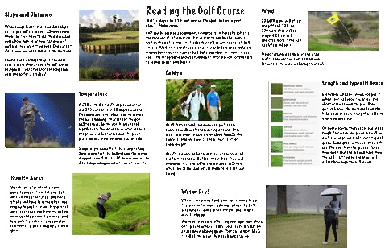

For this project, we were assigned to pick a communication technology of our choice, I chose the golf course as a communication technology. This was made on Indesign and the images were taken from the web. This projects combines all the deisgn principles we learned and the technical skill we got with Indesign working on it with previous projects. To help me accomplish this I first drew out multiple rough drafts on paper to figure out the correct design I wanted. It also toook a little bit of research on the topic itself.
© 2025 Nate Roeder